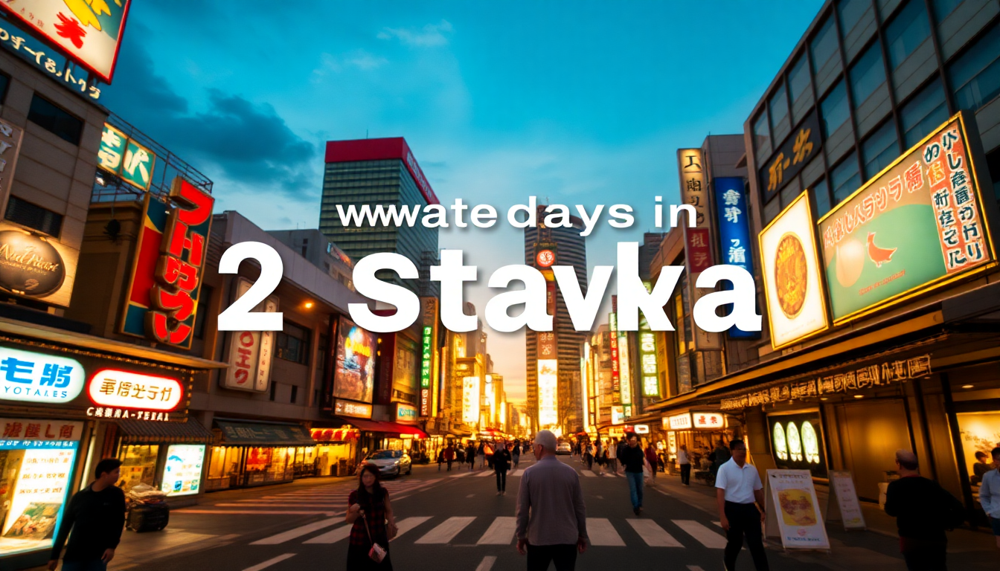

How to Spend 2 Days in Osaka: A Realistic Itinerary

I landed at Kansai Airport on a Tuesday afternoon, exhausted but wired. Two days in Osaka felt tight—too tight for Kyoto day trips or rushed temple-hopping. So I committed to staying put, eating everything, and figuring out the city’s real rhythm. Here’s exactly how I did it, neighborhood by neighborhood.
Why start in Namba instead of Umeda?
Because Namba is the chaotic, delicious heart of Osaka. Umeda is slick and corporate—great for shopping, but not for getting a feel for the city’s soul. I dropped my bag at Hotel Nikko Namba (right above Namba Station, absurdly convenient) and walked straight into Dotonbori before dinner.
- Dotonbori is a sensory assault in the best way: neon signs, sizzling grills, and crowds that somehow feel festive, not suffocating.
- Hozenji Yokocho is a calm alley one block north—stone path, mossy statue, tiny sake bars. I had a quiet beer at Bar Nayuta here.
- Kuromon Ichiba Market is a covered market that runs 9 AM to 6 PM. Go early for grilled scallops and tamagoyaki, skip the overpriced seafood skewers aimed at tourists.
My honest take: Dotonbori at night is mandatory. But eat at the back-alley spots, not the main drag. I had okonomiyaki at Chibo (fine, overhyped) and then a better one at a counter shop called Mizuno one street over.
Is the Osaka Amazing Pass worth it for a short trip?
Yes, but only if you plan to cram. The pass covers unlimited subway rides and entry to about 40 attractions. For a two-day sprint, I’d buy the 1-day version (¥2,800) and use it on Day 2. Day 1 should be walking and eating.
- Osaka Castle is included. Skip the interior—it’s a museum with a fake reconstruction. The grounds are free and nicer for a walk.
- Tempozan Ferris Wheel and Osaka Aquarium Kaiyukan are both covered. The aquarium is genuinely world-class (whale sharks), but budget 2.5 hours.
- Umeda Sky Building observatory is included. Go at sunset. The floating garden is kitschy but the view over the city is legit.
I used the pass for the subway, the castle grounds, and the aquarium. It paid for itself by 2 PM.
Where should I eat in Shinsekai and Tennoji?
Shinsekai is the old-school, slightly grimy neighborhood that feels like 1980s Osaka. I loved it. Tennoji is next door, more family-friendly, with a decent park and zoo. Both are worth a half-day.
- Janjan Yokocho is the main alley in Shinsekai. Try Kushikatsu Daruma for deep-fried skewers—crispy, cheap, and you dip each one exactly once (communal sauce, no double-dipping).
- Tako-pon has takoyaki that’s better than anything in Dotonbori. The batter is runnier, the octopus chunks bigger.
- Tennoji Park is a quiet escape. The Keitakuen Garden inside is a proper Japanese stroll garden, no crowds.
- Tsutenkaku Tower is the neighborhood icon. I skipped the observation deck—the view is better from Umeda—but the retro arcade at its base is fun for 20 minutes.
My rule: eat in Shinsekai before 7 PM. The crowds thin, the skewers are fresher, and you can snag a seat at the counter without waiting.
How do I get from Kansai Airport to the city center?
Two options, and they’re not equal. The Nankai Line (rapid train, ¥1,450, 45 minutes) takes you straight to Namba. The JR Haruka (¥2,650, covered by JR Pass) goes to Shin-Osaka and Tennoji. For a Namba-based trip, take Nankai every time.
- Nankai Namba Station drops you inside the Takashimaya department store. Follow signs to the Namba Walk underground passage—it connects to Dotonbori without surfacing.
- JR Haruka is faster to Tennoji (35 minutes) but then you need a subway transfer to Namba. Only worth it if you have a JR Pass.
- Airport limousine bus (¥1,600, 60 minutes) runs to Namba and Umeda. Comfier but traffic-dependent.
I took the Nankai Line. Easy, cheap, and I was eating takoyaki 50 minutes after landing.
What’s the best area to stay in Osaka?
Namba, no contest. Umeda is convenient for shinkansen access, but it’s dead after 9 PM. Namba is where the action is, and you can walk to Dotonbori, Shinsaibashi, and Kuromon Market.
- Hotel Nikko Namba (where I stayed) is a solid 4-star with a great breakfast buffet. Rooms are small (it’s Japan), but location is unbeatable.
- Cross Hotel Osaka is right on Dotonbori. More expensive, louder, but you’re in the neon glow.
- APA Hotel Namba-Eki Higashi is budget and reliable. Tiny rooms, clean, and a 3-minute walk from Nankai Namba.
- Umeda area: Hotel Granvia Osaka sits on top of Osaka Station. Perfect if you’re doing day trips, but you’ll subway to eat.
I’d book Namba for a 2-day trip. Umeda for a longer stay with day trips to Kyoto or Kobe.
Can I see Osaka Castle and the aquarium in one day?
You can, but you’ll be moving. I did it on Day 2 with the Amazing Pass and it worked. Start at the aquarium at 10 AM (opens at 9:30, but the rush hits at 11), then walk to Tempozan Ferris Wheel (5 minutes), then subway to Osaka Castle by 2 PM.
- Osaka Aquarium Kaiyukan is a 2-hour minimum. The main tank has whale sharks and manta rays. Skip the dolphin show—it’s sad.
- Osaka Castle grounds are free. The main tower costs ¥600 (covered by pass). I walked the grounds, skipped the tower, and was done in 45 minutes.
- Tempozan Market next to the aquarium has a food court with decent okonomiyaki. Not great, but fast.
My timing: aquarium 10–12, wheel 12–12:30, lunch 12:30–1:30, castle grounds 2–3, then back to Namba for a nap. It’s a long day but doable.
FAQ
Is the Osaka Amazing Pass worth it for 2 days? Only if you get the 1-day version (¥2,800) and plan to visit at least three paid attractions plus ride the subway 4+ times. The 2-day pass (¥3,600) is a worse deal unless you’re doing both the aquarium and Umeda Sky Building. Calculate your specific plan—I broke even on the 1-day pass.
What’s the best way to get from Osaka to Kyoto? Take the JR Kyoto Line from Osaka Station (Umeda) to Kyoto Station. It’s ¥570, 30 minutes, and runs every 10 minutes. The shinkansen is faster but costs ¥1,420 and isn’t worth it for this short hop. Avoid the Hankyu Line from Umeda—it’s cheaper but takes 45 minutes and drops you at Kawaramachi, not Kyoto Station.
Is Dotonbori overrated? Kind of. The energy is unmatched, but the food is mostly average and overpriced. Eat your main meals in Shinsekai or Kuromon Market, then walk Dotonbori for the neon and a single snack (I’d pick takoyaki from a stand with a line of locals, not the big-name shops). The canal view from the bridge is genuinely cool at night.
Conclusion
- Base yourself in Namba for walkability to Dotonbori, Shinsaibashi, and Kuromon Market.
- Use the Amazing Pass only for a single packed day—Day 2, after you’ve already explored on foot.
- Eat in Shinsekai for real Osaka street food, not Dotonbori.
- Take the Nankai Line from the airport—fastest and cheapest to Namba.
- Skip Osaka Castle’s interior and the Tsutenkaku observation deck. Focus on food and neighborhoods.